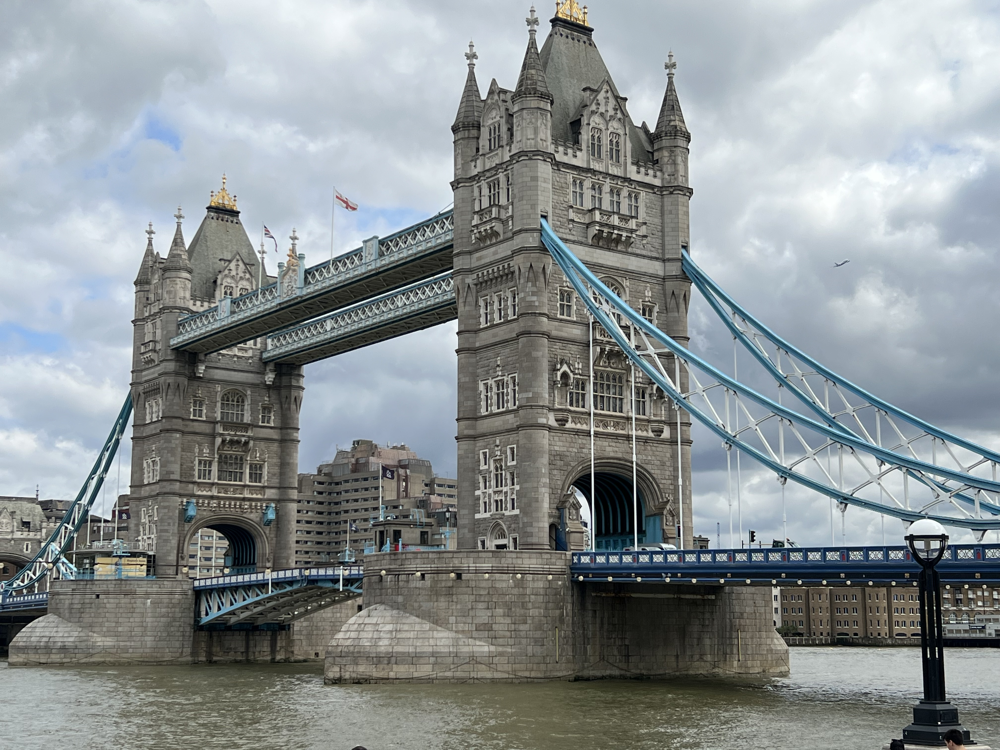

Ever wanted to travel but have no one to go with? It's time to stop waiting and go by yourself! Back in 2008, I decided I wanted to vist London and it finally occured to me that if I continue to wait for someone to want or be willing to go with me, I could be waiting forever. So, I booked my flight and took off on my first solo trip and I've not looked back since!
Each city or country listed below will lead to its own separate page where you can read about what I did, who I flew, where I stayed, what I ate and the ups and downs of being an introverted solo traveler.
Of all the places I've been and seen, this is still my favorite icon of all time and lives rent free in my mind. Taken in August 2023 on my iPhone 13 Pro Max.
I've been wanting to do this website for ages so I'm glad to have this medium to pursue it. Also, if I ever go live with it, I will take my name out and only sign off with my well known user name of rokrchik. Footer below is for in class only.